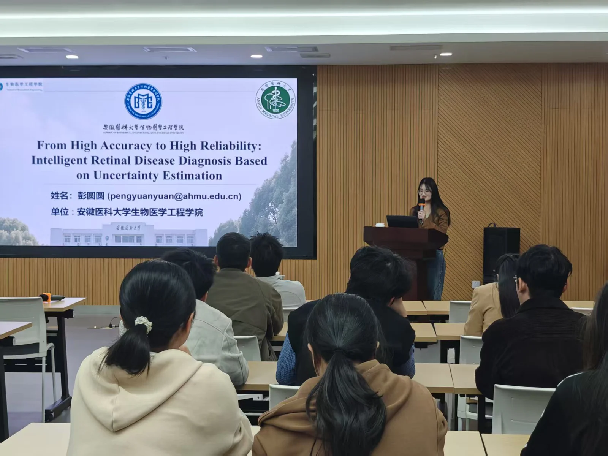
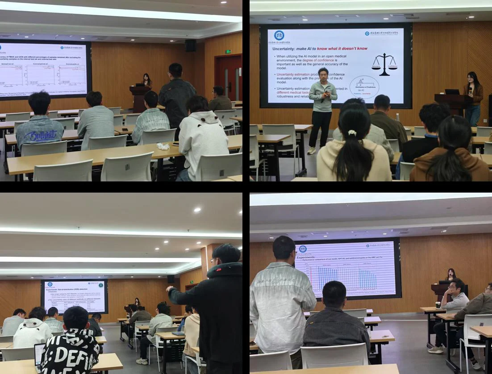

高可信医学智能诊断专题讲座：从高精度到高可信：基于不确定性估计的视网膜疾病智能诊断
---iMED中国第七十讲学术分享会
2026年4月8日，中国科学院宁波材料技术与工程研究所智能医学影像团队举办了医学图像/眼科影像专题学术分享会——iMED中国第七十一讲。本次报告题目为“从高精度到高可信：基于不确定性估计的视网膜疾病智能诊断”，邀请安徽医科大学生物医学工程学院彭圆圆副教授担任主讲嘉宾。

近年来，人工智能在医学影像分析领域取得了显著进展，但在真实临床环境中的进一步应用仍面临可靠性、可解释性与风险感知能力不足等关键挑战。围绕“如何提升视网膜疾病智能诊断的可信性”这一核心问题，彭圆圆副教授系统介绍了不确定性估计在医学人工智能中的研究背景、基本思路及其在视网膜疾病诊断中的应用价值。报告从模型预测置信信息的刻画与量化出发，讨论了如何借助不确定性信息辅助诊断决策、提升模型稳健性，并推动医学人工智能由“高精度”迈向“高可信”。
报告中，彭圆圆副教授结合团队近年来在医学影像智能分析方面的研究工作，介绍了不确定性建模在疾病识别、结果评估和临床辅助决策中的潜在意义，并围绕模型性能评价、数据质量影响以及可信诊断系统构建等方面展开了深入讲解。报告内容兼具理论深度与应用价值，为在场师生理解可信医学人工智能的发展方向提供了有益启发。
在交流讨论环节，现场气氛热烈，师生们围绕不确定性估计中的评价与阈值选择思路、数据集构建与使用中的相关问题，以及模型在真实场景中的应用挑战等展开了积极提问。彭圆圆副教授结合具体研究经验，对相关问题进行了耐心细致的解答，并就可信医学影像智能诊断未来的发展方向与现场师生进行了深入交流。

本次讲座不仅加深了团队成员对不确定性估计与可信医学人工智能的理解，也为后续开展医学影像智能分析相关研究提供了新的思路与方法参考，讲座在热烈的掌声中圆满结束。